The Cobra MkIII is a small ship manufactured by Faulcon DeLacy. It was designed as a true multipurpose ship, being able to hold its own in combat, carry a reasonable sized payload for its size, and light enough with large enough internals to jump far. The design has been so successful that it's one of the oldest ships still in service, having first debuted in 3100. It's general planform is largely similar to the Sidewinder MkI, having a similar flat, broad, wedge-like shape. The following reference quantities were used when performing the analysis for the Cobra MkIII. Additionally, diagrams of the Cobra MkIII geometry and CG used in the analysis are provided.
| S_ref (Reference Area) | 245.6173 m^2 |
| b_ref (Reference Span) | 42.2064 m |
| c_ref (Reference Chord) | 27.0961 m |
| CG_x | 12.0862m from leading edge |
| CG_y | Ship centerline |
| CG_z | 4.4850m from bottom-most surface |
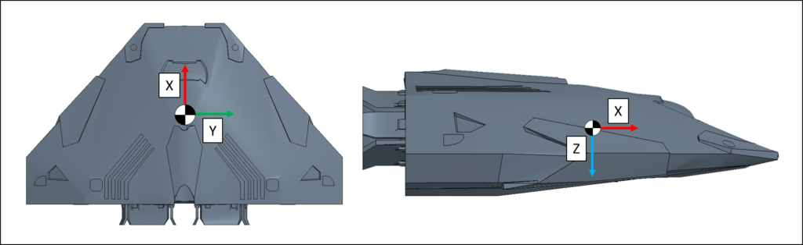
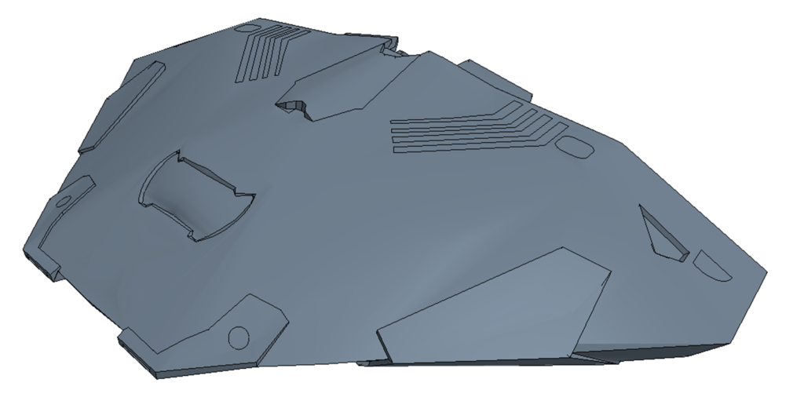
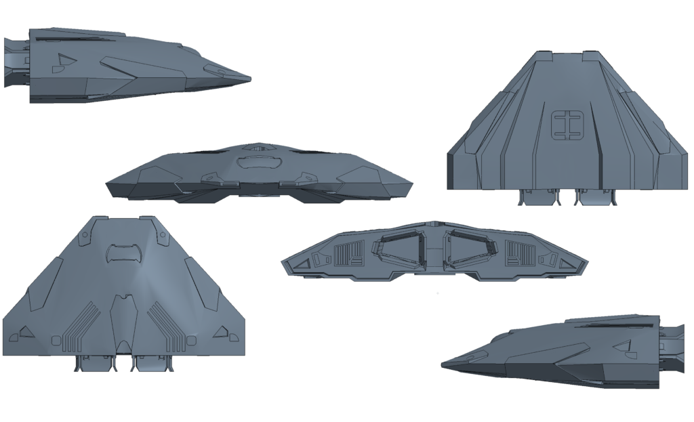
Based on the shape of the Cobra MkIII and its lack of anything that could be considered wings, it is clearly a lifting body. These types of vehicles have decent lifting capability at high speeds but suffer at lower speeds. This can be compared against the Sidewinder MkI which is a similar shape. A quick inspection shows the Cobra MkIII has very similar performance to the Sidewinder MkI. It maintains a decent lift to drag ratio and slower speeds but this drops off at hypersonic speeds, as expected. Due to top to bottom asymmetries, the drag bucket is shifted such that that the lowest drag occurs at a small (<5°) angle of attack. However this top to bottom assymetry was not as bad as it was with the Sidewinder MkI and the Cobra MkIII did not have the same pitching moment divergence issues that the Sidewinder MkI had. However, despite it's sleek frontal appearance, its large and blunt aft end resulted in a large drag coefficient, similar in a sphere with the same frontal area. The Cobra MkIII exhibits odd changes to its flight characteristics as it accelerations from subsonic to hypersonic speeds. As shown below, the shock patterns that develop during the transonic regime are very unsteady and switch from a "Mouse Ear" shape just behind the heat vanes to multiple overlapping wedges over the course of a small fraction of Mach number. While this isn't inherently bad, it does indicate the Cobra MkIII might have some buffeting issues as it transitions from subsonic to supersonic speeds.
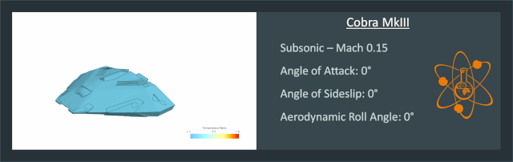
Despite lacking a tail, the longer airframe of the Cobra MkIII lead it to being mostly stable at pitch, especially at positive angles of attack. As shown, at supersonic and hypersonic speeds, the cobra is strictly stable having a negative static margin. Also, while stable, the static margin is small putting it closer to neutrally stable indicating the Cobra MkIII would be a quick turner in the atmosphere. In the subsonic flight regime however, it is about the same amount unstable which is unfortunate meaning that it might be even snappier in reacting to input as a pilot comes in for a landing. An interesting phenomena occurs during the transonic flight regime where the vehicle shifts from very unstable at negative angles of attack to neutrally stable to stable at positive angles of attack. This is due to the curved upper surface being exposed at negative angles of attach while the mostly flat underside is exposed at positive angles of attack caused by the start of shock formations at these speeds. This unfortuate change in stability characteristics across Mach number means the pilot of flight control system will have to heavily compensate as the vehicle accelerates. Another thing to point out is, like the Sidewinder MkI, the Cobra MkIII's pitching moment is always negative, so even though it is stable, the vehicle would always try to pitch down and there are no aerodynamic trim points (except maybe -10° angle of attack at supersonic speeds). This means the only way for a Cobra MkIII to fly through at atmosphere controlled is using its thrusters. That said, the Cobra MkIII also has a very large thrust vectoring system which might be able to easily compensate for this, compared to the Sidewinder MkI which does not.
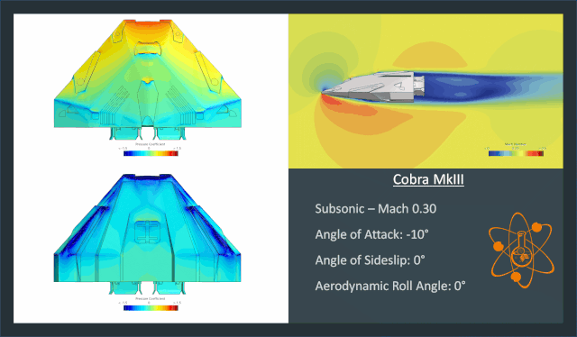
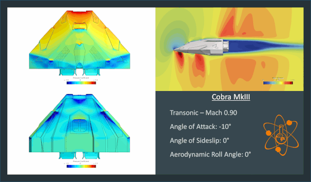
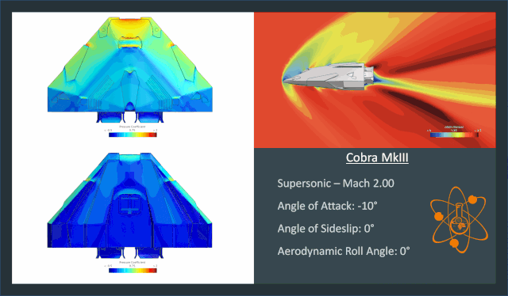
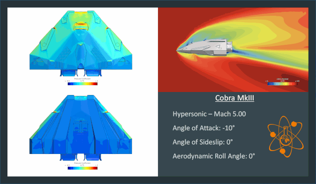
Despite it's odd pitch characteristics, the Cobra MkIII was found to have easy and always stable yaw characteristics. As shown, the airframe is roughly 0.2 calibers stable in yaw for all Mach numbers, with some slightly shifts for subsonic and transonic flight. That said, due to the shape of the Cobra MkIII and it's lack of vertical surfaces, the yawing moment is incredibly small, almost 10 times smaller than the pitching moment. At such, the ship's thrusters should be more than capable of yawing the ship in any flight condition. The same scale factor is approximately true for the side force as well, indicating that for the vehicle to pull any reasonable G's in an atmosphere, it should be treated as a bank-to-turn system, like an aircraft, not a side-to-turn system, like a missile.
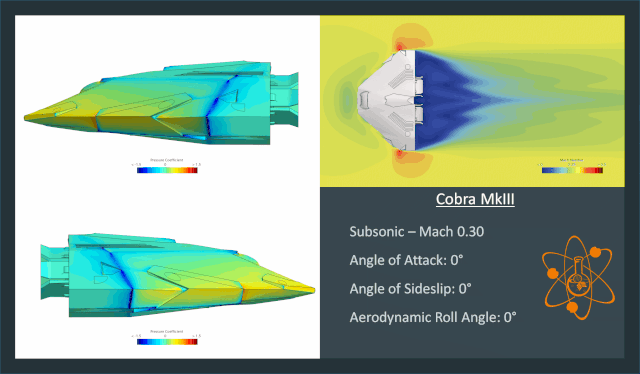
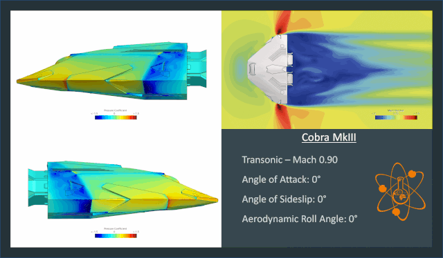
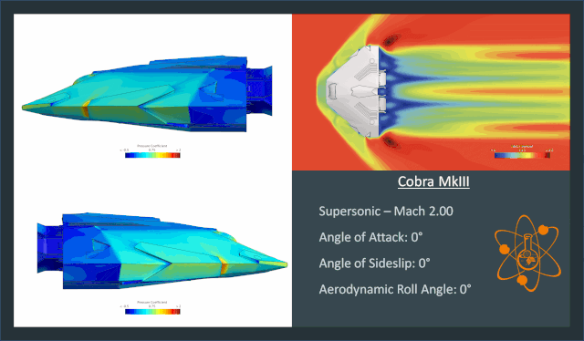
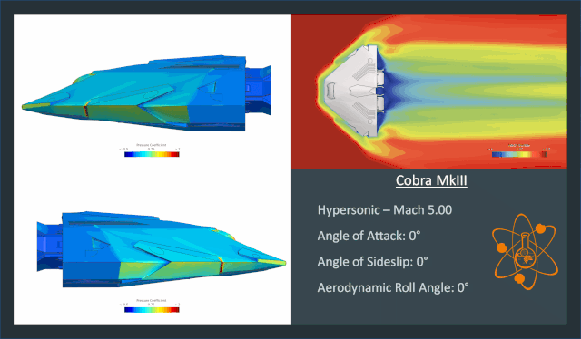
The Cobra MkIII showed roughly consistent roll characteristics and is always unstable in roll except at higher roll angles during transonic flight. This could pose a problem since any amount of slid slip would result in a roll angle which could start to roll the ship more. Fortunately, the rolling moment is almost 25% of the yawing moment, which itself was small. As such, the ship's thrusters and thrust vectoring (since it has two engines with lateral spacing it can also control roll with thrust vectoring) should always be more than enough to control the ship's roll.
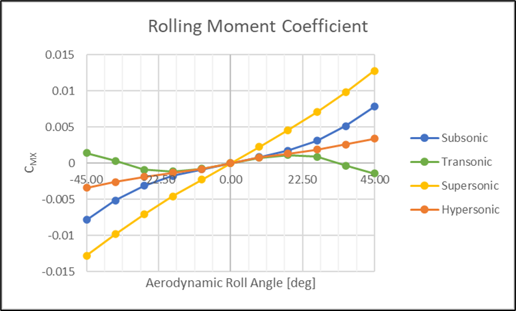
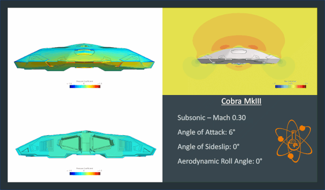
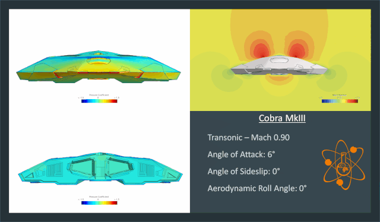
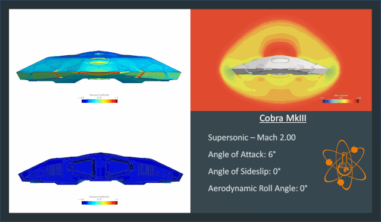
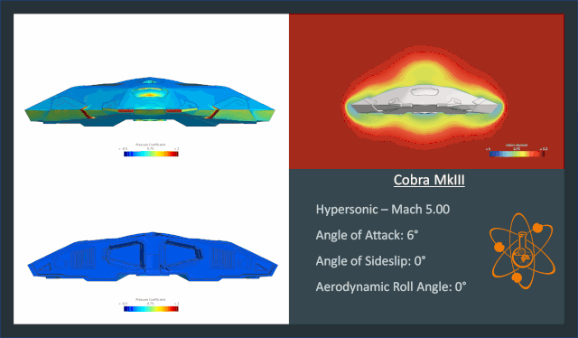
Fortunately, or unfortunately depending on how you want to look at it, there is not much to write about the Cobra MkIII's aerodynamics. It is about as good as one would expect from a flat, broad, wedge shape with a blunt aft end. It is stable but will always want to pitch down due to its pitching moment coefficient about the estimated CG always being negative. This would normally be unacceptable, as it was for the Sidewinder MkI, requiring the ship's maneuvering thrusters to always be firing in an atmosphere to keep it trim. However, the Cobra MkIII sports a very large double thrust vectoring system capable of exerting immense control over the ship and likely overpowering almost all aerodynamic forces and moments on it. As such, it is expected the Cobra MkIII would perform well in an atmosphere, even despite its shape, thanks to Cowell & MgRath putting the thrust vectoring system on it back in 3100. Perhaps they anticipating the Cobra MkIII's future atmospheric roll and attempted to overcome it early.
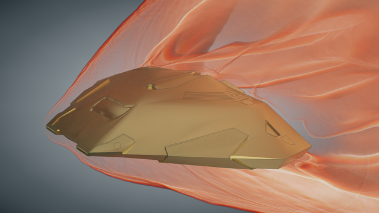